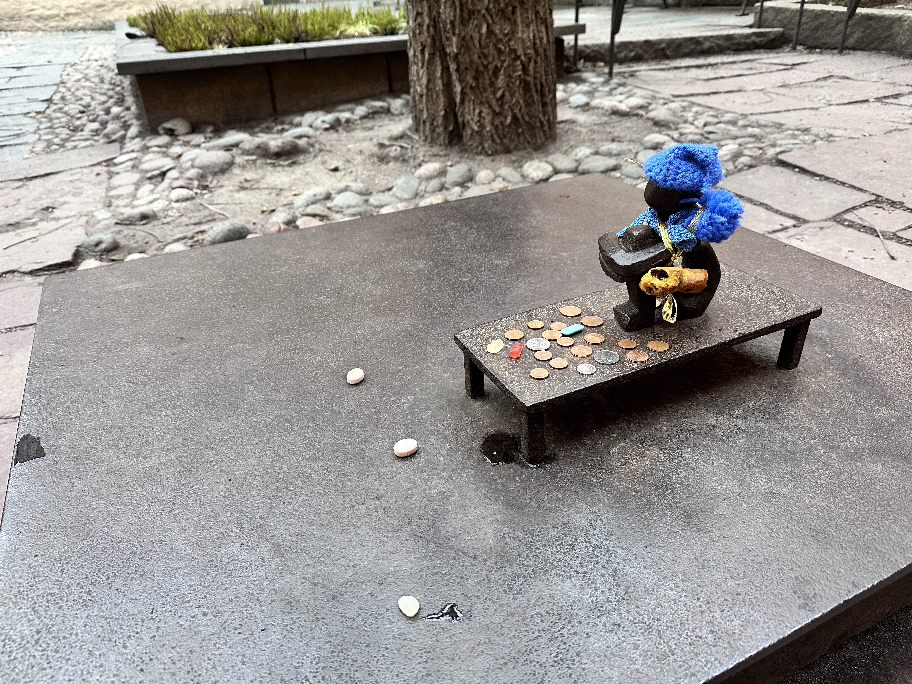
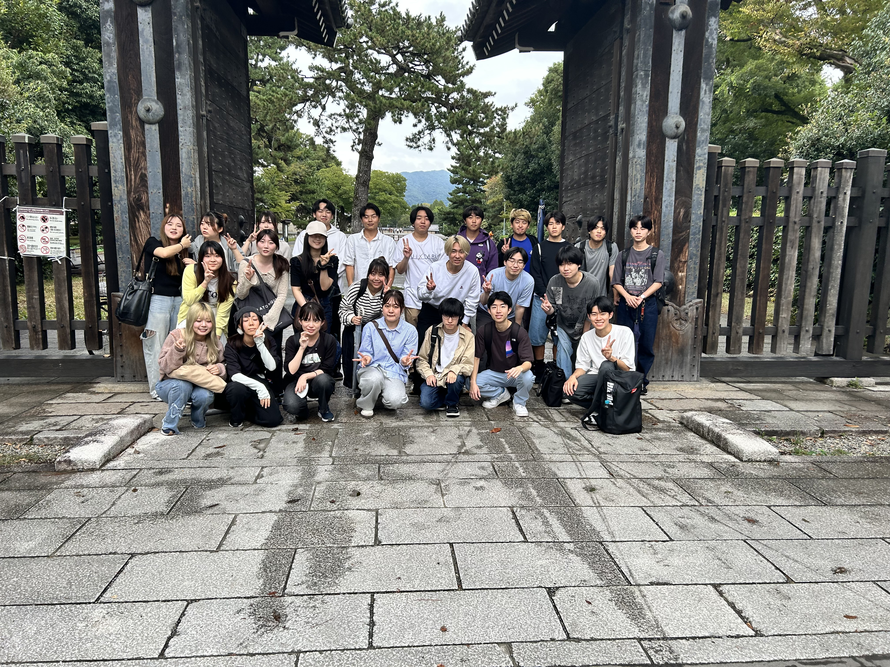
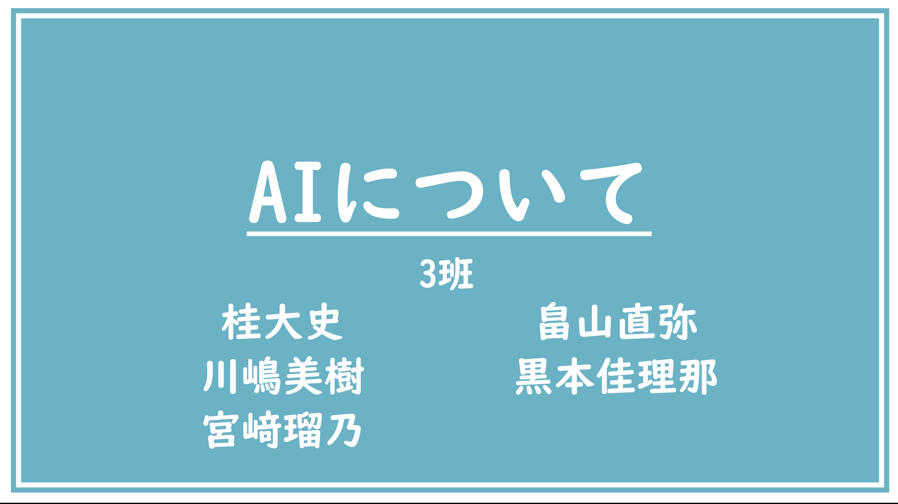
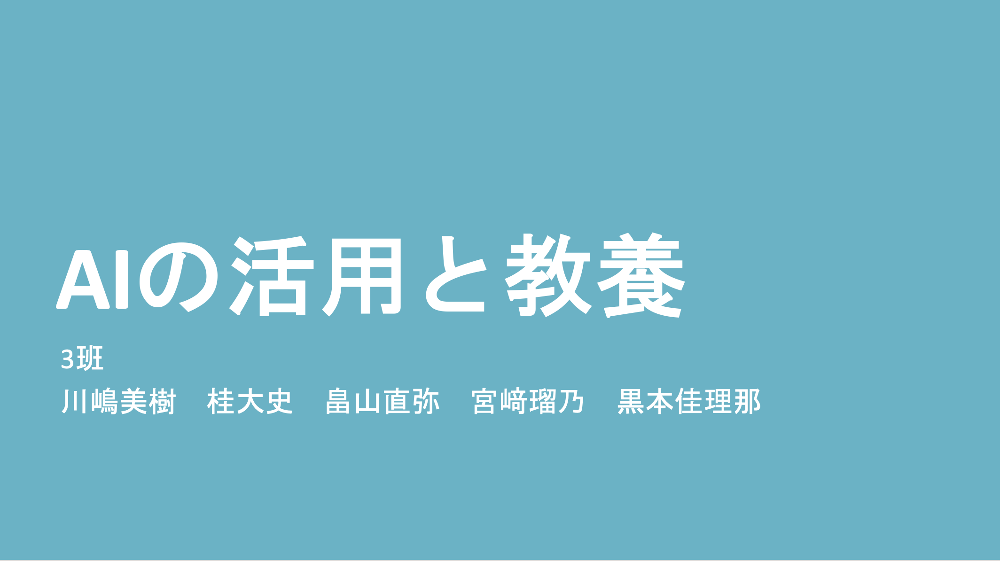
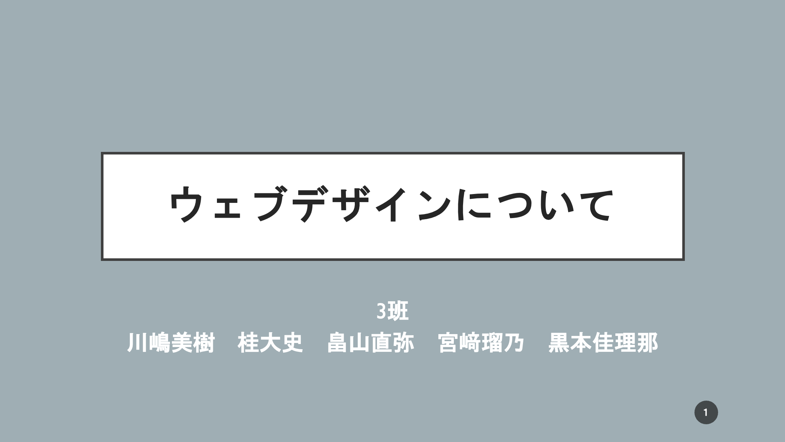

Seminar
高井ゼミ23期は25人で活動しています。2年生の秋学期には5人一組に分かれてITについてのプレゼンテーションを行いました。
<今学期行った発表内容>
①AIについて（前半）
②AIについて（後半）
③Webデザインについて


高井ゼミ23期は25人で活動しています。2年生の秋学期には5人一組に分かれてITについてのプレゼンテーションを行いました。
<今学期行った発表内容>
①AIについて（前半）
②AIについて（後半）
③Webデザインについて

1回目と2回目はAIについての発表を2回に分けて行いました。1回目では主にAIブームについての発表を行いました。
私は7から10ページの「第一次AIブーム」について発表を行いました。
第一次AIブームは人々に革命と希望をもたらしましたが、常識推論や言語理解への複雑な問題に対応できず終わりを迎えました。

（クリックで全スライドを表示）
2回目は生成AIをはじめとする様々なAIサービスとこれからの発展について発表しました。私は7から10ページの生成AI以外のAIサービスを紹介しました。
我々がAI=生成AIと認識してしまうほど生成AIは凄まじい発展を遂げていますが、農業や教育、ビジネスの場においてもAIは幅広く活躍しています。

（クリックで全スライドを表示）
3回目はAIから大きく離れ、Webデザインについての発表を行いました。
私は6から12ページの視線誘導パターンについて発表しました。
Webデザインにおいてレイアウトを決めるということは視線誘導パターンを作るということです。その中でも「F型」「N型」「Z型」の3つが有名なパターンとしてよく使われています。皆さんもWebページを見る機会があったらこのようなデザインが使われているかぜひ確かめてみてください。

（クリックで全スライドを表示）